Entrega 3 · La calle
Cuando mataron a Rasquiña, el jefe de Los Choneros, las cárceles del Ecuador se repartieron entre sus herederos y empezaron las masacres. Un equipo de La Posta entró a la Penitenciaría del Litoral con los dos permisos que hacen falta, el del Estado, que deja entrar, y el de los presos, que deja salir con vida, caminó los barrios del microtráfico en Guayaquil y Durán y sentó a cámara a los líderes de las bandas. Cuatro entregas, más de cuatro millones de vistas y una tesis que nadie quería oír.

Hasta septiembre de 2021, del interior de las cárceles del Ecuador solo se conocía la versión oficial. Ningún equipo periodístico había entrado a los pabellones sin custodia del Estado a preguntarles a los presos quién mandaba. La Posta entró con los dos permisos que hacen falta, el del Estado, que deja entrar, y el de los presos, que deja salir con vida, y salió con el mapa de quién controla cada pabellón.
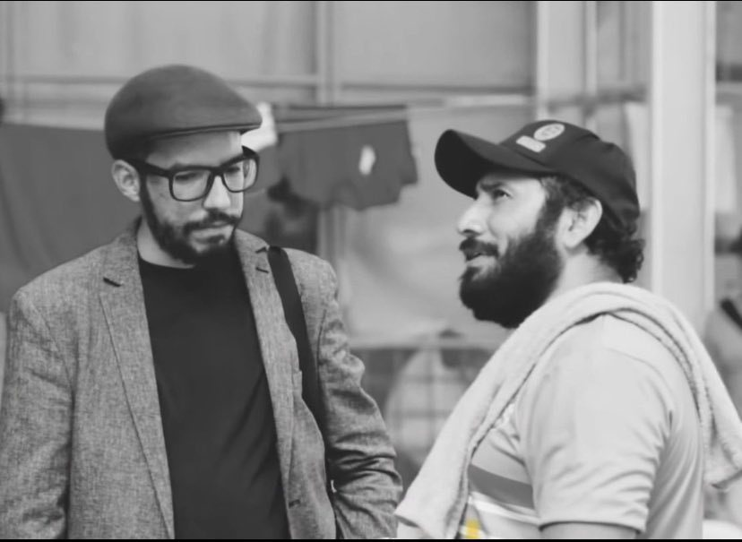
Por primera vez el país conoció con nombre y apellido a los líderes de las bandas, cómo se repartían las cárceles y cómo se repartían los territorios, a partir de un cuadro de la propia Policía sobre el crimen organizado que el equipo adaptó para proteger a sus fuentes. La serie mostró los tentáculos del crimen organizado controlando instituciones antes de que el Estado lo admitiera.
La serie mostró los tentáculos del crimen organizado controlando instituciones antes de que el Estado lo admitiera.
Para entender las masacres hay que entender a un hombre. Jorge Luis Zambrano, alias JL o Rasquiña, empezó como ladrón de celulares, siguió como sicario y desde la cárcel construyó Los Choneros, la banda nacida en Manabí a fines de los noventa que hacia 2007 pasó a la logística de los carteles, absorbió en 2017 a los ex Ñetas y durante una década controló las prisiones, el microtráfico, la cooperación con el narcotráfico y el sicariato del país. Se graduó de abogado preso. Convirtió la banda en una corporación: dejó que sus hombres de confianza tuvieran sus propias subdivisiones, todas bajo su mando. Fito y Javi, hoy en libertad, fundaron Las Águilas, con base en Manabí. Junior, un sicario de La Troncal que no era chonero y conoció a JL en la cárcel, fue el brazo armado con Los Fatales. Ben 10 y El Hebreo, hermanos, tomaron los Chonekillers en Durán. Willy, un exguía penitenciario, los Tiguerones. Pipo, Los Lobos en Latacunga. Mientras JL vivió, convivieron.
Lo mataron el 28 de diciembre de 2020 en un centro comercial de Manta, fuera de la cárcel, donde era intocable; había salido en prelibertad meses antes. La inteligencia policial atribuyó entonces el crimen a Los Lagartos con apoyo de carteles mexicanos. Se suponía que Fito heredaría. No fue tan simple: cada líder tenía su forma de mandar y ninguno quiso someterse a otro. Fito y Junior se aliaron en la Regional; Ben 10, El Hebreo, Willy y los Lobos formaron el otro bando. El 21 de febrero de 2021 presos secuestraron guías en la Regional para frenar la entrada de dos armas destinadas a matar a Fito y a Junior; panfletos anunciaban su muerte con guiños a un cartel mexicano. Dos días después, el 23 de febrero, 79 muertos en motines simultáneos. El 28 de septiembre, 119 muertos en la Penitenciaría del Litoral, la peor masacre carcelaria en la historia del país: el pabellón 3, de Junior, contra el 2, de El Hebreo, separados por una pared de dos metros y medio y una malla que se corta. La versión oficial hablaba de una guerra entre el cartel de Sinaloa y el Jalisco Nueva Generación. La Posta decidió preguntarles a ellos.
Jefe. Empezó robando celulares, siguió como sicario, dominó las cárceles y se graduó de abogado preso. En prelibertad desde mediados de 2020. Asesinado el 28 de diciembre de 2020 en un centro comercial de Manta.
Logística y conexiones internacionales. Fugado de La Roca en 2013 con otros 17. En 2021 cumplía los últimos meses de su condena, por la fuga, sin sentencia por narcotráfico; estudiaba Derecho a distancia. Presunto heredero.
No era chonero: conoció a JL preso, aprendió a leer en la cárcel y se volvió su brazo armado con Los Fatales. Sicario de La Troncal. Sospechoso de atentados con bombas contra un cuartel policial y una unidad de Fiscalía.
Hermanos. Dominio territorial en Durán y la zona 8 de Guayaquil; Ben 10 manda desde fuera de la prisión, El Hebreo era el cabecilla del pabellón 2. Herederos de la filosofía Ñeta.
Exguía penitenciario. Dirige desde fuera de la prisión.
Latacunga y la Sierra centro. La Policía lo daba por muerto desde febrero de 2021 por una foto. Capturado en noviembre de 2025 como jefe de la banda más poderosa del país.
El 30 de septiembre de 2021, dos días después de la masacre, Boscán publicó el prólogo con un mapa en la mano: la Penitenciaría tiene doce pabellones y cada uno lo controla una banda; La Roca, la cárcel de máxima seguridad, está vacía; en la Regional mandan Fito y Junior. Quince días antes tres drones habían volado sobre la Regional sin que ningún inhibidor los frenara; uno estalló con C4 sobre el pabellón de máxima seguridad donde están Fito y Junior y dobló las vigas sobre la celda de Junior; los otros dos cayeron cuando los reclusos sacaron dos fusiles. No era un mensaje. Era un intento de asesinato, y detonó la matanza. Una llamada al 911 durante el motín, a la que La Posta tuvo acceso, muestra a un preso pidiendo que manden la ley mientras suenan los disparos. La primera jornada dejó 19 muertos en el pabellón 5. El Gobierno dijo que todo estaba controlado. Después mataron a 70 más. La guerra del último año y medio dejaba más de 200 muertos en las cárceles y al menos 1.200 en las calles.
Para entrar a una cárcel del Ecuador hacen falta dos permisos: el del Estado, que te deja entrar, y el de los presos, que te deja salir con vida. El primero lo dio por escrito el SNAI de Fausto Cobo en junio de 2021; el de las cuatro bandas contrarias llegó por un operador de Leandro Norero, y el de Fito y Junior por una llamada que hizo un empresario costeño desde la oficina de Boscán. La mañana de la visita un centenar de policías hacía una requisa, armados y con celulares, sin que nadie llevara control de cuántas armas entraban y salían. La revisión de entrada duró una hora, pero las pantallas de los escáneres estaban apagadas, las bandas no rodaban y los detectores no encontraron los objetos que dejaron a propósito en los bolsillos. Los guías que los escoltaron no tenían armas letales y las que llevaban no tenían municiones; el país tenía unos 1.300 guías cuando necesitaba 4.500. En la puerta del pabellón 2 esperaron veinte minutos a que el llavero, un preso, abriera la mirilla. Solo los presos tienen las llaves. Cada pabellón es una cuadra amurallada de cinco metros con un vigía armado en la punta; al ingresar te preguntan a qué pabellón quieres ir, y así la cárcel terminó repartida como un pastel.
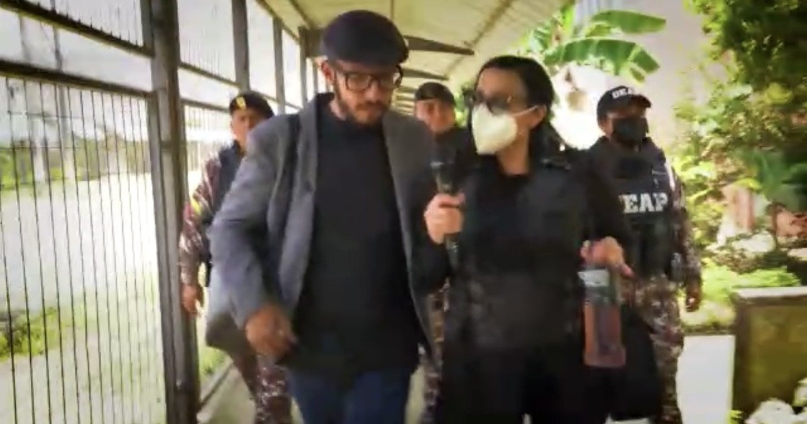
La segunda entrega es la economía. Cada pabellón tiene un comandante que impone las normas; cada ala, un caporal que controla unos 250 presos y tres negocios: los pushers, autorizados a vender droga, más barata que en la calle, a un dólar la dosis de H o de cripy, que sirve de moneda; el banco, un preso que recibe entre 5.000 y 50.000 dólares a la semana para prestarlos al 30 o 100 por ciento de interés; y la tienda. El cigarrillo está prohibido y se compra: la cajetilla a 20 dólares. Meter un celular cuesta 300 y usarlo, 20 a la semana. El Estado invirtió cientos de miles en inhibidores y adentro el derecho a usar router vale 30 dólares semanales; Boscán lo probó sintonizando La Posta desde el pabellón 2, el de los Chonekillers. Y se paga lo que uno no quiere: la celda, el colchón, rasuradoras cada semana; el que no paga va a cuarentena, pocos metros cuadrados para cuarenta presos que duermen por turnos en el suelo. Un pabellón deja entre 50.000 y 70.000 dólares a la semana, unos 200.000 al mes. Hay doce. En 2024 Boscán calculó el sistema completo: 20 dólares semanales por cada uno de 40.000 presos, 800.000 a la semana solo en cobros internos.
Mandan el pabellón e imponen las normas de convivencia. Se compra todo lo que el comandante ordene.
Cada pabellón tiene cuatro alas, dos arriba y dos abajo; cada ala, un caporal que responde ante el comandante.
Venden droga adentro.
Reciben entre 5.000 y 50.000 dólares a la semana para prestarlos al 30 o al 100 por ciento.
Venden pan, galletas, bebidas: lo que el economato del Estado no provee.

Fito recibió al equipo en su pabellón: la primera vez que un medio hablaba con el líder de Las Águilas, que dirigía la Regional y dos pabellones de la Penitenciaría. Junior, a quien la Policía teme, les ofreció un Red Bull y cigarrillos y conversó en la azotea, bajo el hueco que dejó el dron. Cuando un preso se fugó de la Regional, el Estado tuvo que pedirles a Fito y a Junior que lo recapturaran. Las requisas, que los presos llaman raquetas, entregan armas señuelo para que la Policía diga que hace algo; el 4 de octubre La Posta difundió el audio de un policía avisando a los pabellones de Fito y Junior del operativo que preparaba la comandante Tannya Varela. Y La Roca sigue vacía; cuando el equipo preguntó por qué no llevan allí a los cabecillas, la respuesta fue: eso sería a muerte. Horas después de la visita hubo una balacera en la Penitenciaría que ningún medio reportó. Días después llegó la masacre del 28 de septiembre.
Rojo: pabellones de Fito y Junior. Azul: Chonekillers, Lobos, Latin Kings y Tiguerones. A una pared de distancia.
La tercera entrega sale a la calle. Un viernes en un sector popular de Guayaquil: una peatonal con rejas cuyas llaves tienen los microtraficantes; afuera los niños juegan con pistolas de juguete y adentro, en una sala de tres por seis, cinco muchachos de entre 17 y 32 años empacan cripy y H mientras un recién nacido duerme en el único cuarto. En esa ciudadela hay al menos cuarenta puntos de venta y cada uno deja entre 100 y 150 dólares al día. La droga viene de San Lorenzo, en Esmeraldas, donde la guerrilla domina el narcotráfico; a pocas cuadras un retén militar revisa todo y no encuentra nada. No hay edad para consumir, dicen. Por la noche, en Durán, los Chonekillers muestran su escuadrón de élite armado, rezan en plena calle con un rito heredado de los Ñetas y ponen a un sicario de veinte años frente a la cámara: mató por primera vez a los 18; una muerte cuesta 150 dólares si el objetivo no es nadie y más de mil si es alguien.
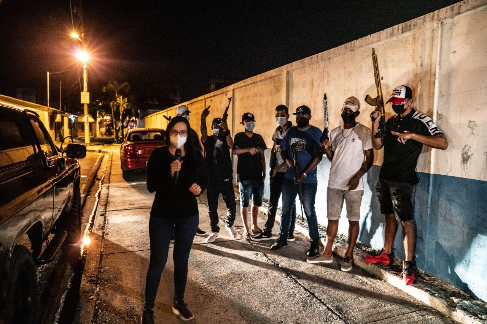
La cuarta entrega vuelve a las cárceles con la pregunta de fondo. Fito niega haber ordenado la muerte de JL. Todos niegan trabajar para carteles mexicanos: yo vivo en el Ecuador, no voy a permitir que un extranjero imponga un régimen. En 2008 el Gobierno de Correa escuchó a los Ñetas y a los Latin Kings, los atendió en centros de salud, los inscribió en la universidad, los organizó en planillas de trabajo y los llevó a deponer las armas y dejar las calles. Fito y Junior firmaron un acuerdo de paz, pero solos, sin sus contrarios. Los líderes ofrecieron entregar las armas de las cárceles si los separaban. El problema está a la vista en el plano de la Penitenciaría: los pabellones de un bando y del otro están mezclados, a una pared de distancia. La propuesta de la serie es elemental: separarlos con muros o con uniformados y abrir un proceso de paz. Los procesos de paz nunca son la opción más popular.
El sistema está abandonado y 40 mil reclusos en el país no trabajan ni estudian ni tienen esperanza alguna de poder reinsertarse en una sociedad que a ratos, más que condenarlos a prisión, parece cómoda condenándolos a muerte.
Paz o Plomo, cuarta entrega, 26 de octubre de 2021
No se separó a nadie. Tres semanas después de la cuarta entrega Lasso ofreció la mediación de la Conferencia Episcopal, que la llamó un buen deseo. La noche del 12 de noviembre de 2021, diecisiete días después de la cuarta entrega, hubo una nueva masacre en la Penitenciaría del Litoral: 68 muertos según el primer conteo de la Fiscalía, cifra que el Gobierno rebajó a 62, y 44 heridos. Boscán la reconstruyó el lunes 15, con fuentes de adentro: la Policía había desarmado días antes al pabellón 2, de Ben 10 y El Hebreo, trasladado poco antes; el pabellón 3, de Junior, lo atacó; 950 presos se refugiaron en un ala mientras la mayoría de los muertos, más de 40, caía incinerada en el pabellón F, un transitorio donde se pagaba por no convivir con los peligrosos; 350 policías contra 2.000 hombres armados, más de cinco mil municiones, y la Policía entró a las 2:30 de la madrugada, con los militares afuera porque el anterior jefe del Comando Conjunto había cabildeado en la Corte Constitucional para que no entraran. El Gobierno de Lasso convocó a todos los poderes del Estado y anunció un nuevo estado de excepción, asesoría de Colombia, la entrada de militares a las cárceles como zonas especiales y un proceso de pacificación encabezado por Nelsa Curbelo con la Conferencia Episcopal. Nunca se hizo. Septiembre de 2021 había sido el mes más violento en diez años, 320 muertes frente a 105 un año antes; Guayas superaba a Sinaloa en tasa de asesinatos. Las masacres siguieron en 2022 y 2023. El país terminó 2021 con 17,1 homicidios por cada 100.000 habitantes y en 2023 llegó a 47, la tasa más alta de América Latina.
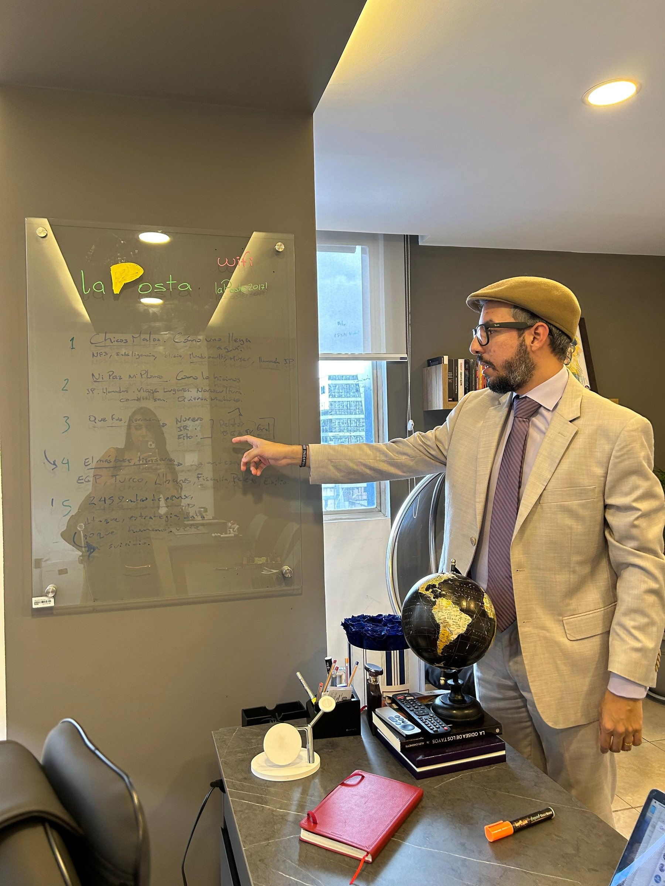
Los protagonistas siguieron su curso. Fito se fugó de la Regional en enero de 2024; su fuga desató motines simultáneos, atentados con bombas y secuestros de policías, y el Gobierno de Daniel Noboa declaró el conflicto armado interno. Lo recapturaron el 25 de junio de 2025 en un búnker de lujo en Montecristi y el 20 de julio de 2025 fue extraditado a Estados Unidos, el primer ecuatoriano entregado por crimen organizado tras la reforma constitucional de 2023. En febrero de 2026 su audiencia en Nueva York se aplazó entre versiones de una negociación con los fiscales. Junior Roldán fue asesinado en Colombia en mayo de 2023. Pipo, a quien la Policía daba por muerto, fue capturado en noviembre de 2025 como jefe de Los Lobos, para entonces la organización más poderosa del país. Cuatro escoltas de Fito fueron condenados en noviembre de 2025.
Los periodistas también. Desde octubre de 2021 Boscán recibió amenazas directas: un grupo autodenominado Los Fantasmas difundió un video armado contra La Posta, le enviaron fotos de sus hijas subiendo al bus escolar, y la fiscal Salazar lo hizo entrar al Sistema de Protección de Víctimas y Testigos; Fundamedios pidió acciones inmediatas. Boscán contó en 2024 haber recibido 27 amenazas de riesgo considerable. Se exilió en 2023 y en septiembre de 2024 él y Mónica Velásquez volvieron a salir del país. En 2024 el equipo de La Posta volvió a entrar a las cárceles: Turi en febrero, centro de operaciones de Los Lobos con 971 presos, y Esmeraldas en junio, 1.518 presos, más de 150 armas y 88.000 municiones incautadas, donde alias Santos, el caporal, cobraba 10 dólares semanales a cada preso y castigaba con látigo. Ese junio Boscán contó por primera vez cómo llegó a Norero, a Fito y a Junior. La tesis de 2021 sigue sin aplicarse.
Actualizado el 5 de septiembre de 2026
Fito y otros 17 se escapan de la cárcel de máxima seguridad sin un tiro.
Rasquiña, jefe de Los Choneros, asesinado en Manta.
79 muertos. Dos días antes, presos habían secuestrado guías para frenar armas destinadas a matar a Fito y Junior.
119 muertos en la Penitenciaría del Litoral.
El esquema de las bandas, dos días después.
El mapa, la cárcel, la calle, la paz.
Los Fantasmas amenazan en video a La Posta; fotos de sus hijas. Fundamedios alerta.
68 muertos en la Penitenciaría, según la Fiscalía. El Gobierno anuncia la pacificación de Nelsa Curbelo.
Asesinado en Colombia.
Estalla la crisis; Noboa declara el conflicto armado interno.
Boscán, exiliado ya en 2023, y Velásquez salen del país.
En un búnker en Montecristi.
Fito es entregado a Estados Unidos.
Capturado el jefe de Los Lobos.
Dirección y reportería.
Reportería de terreno en cárceles y barrios.
Líder de Las Águilas, facción de Los Choneros.
Las bandas que se disputan las cárceles y las calles.
Fotos vía Wikimedia Commons. Alias Fito: Penitenciaría (CC BY-SA 4.0).
Exhortó a las autoridades a tomar acciones inmediatas frente a las amenazas de muerte contra Velásquez y Boscán.
Amenazas directas a Boscán a partir de octubre de 2021, según registró la prensa.
Tras el 12N anunció un nuevo estado de excepción, asesoría de Colombia, militares en las cárceles y un proceso de pacificación con Nelsa Curbelo y la Conferencia Episcopal. La separación de bandas nunca se hizo.

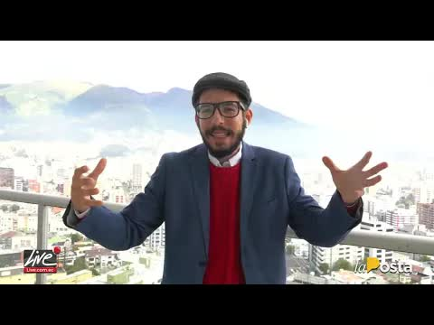
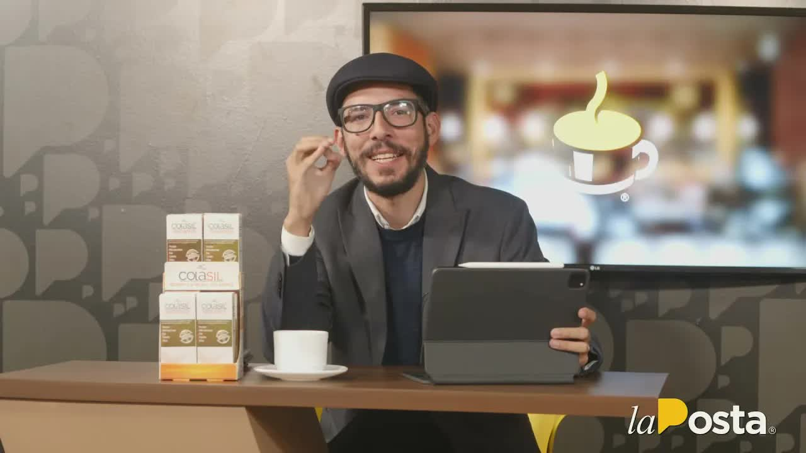
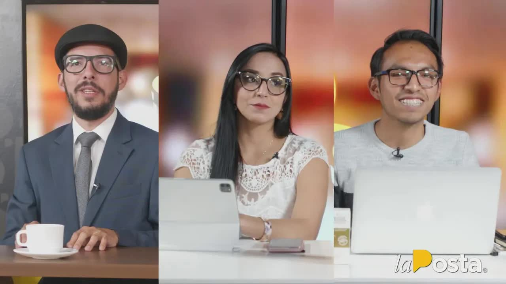
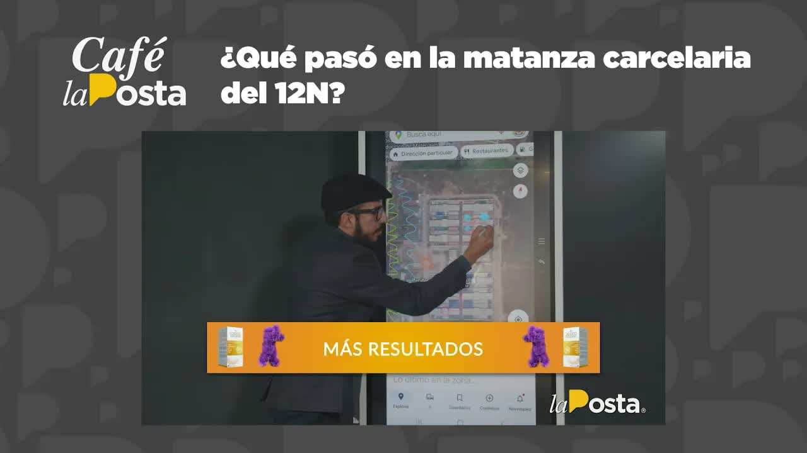
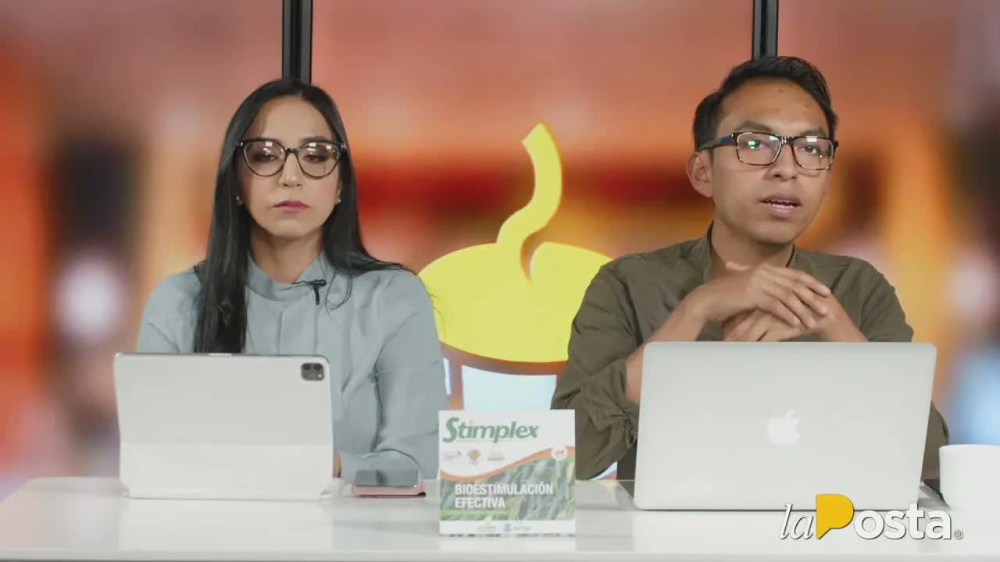
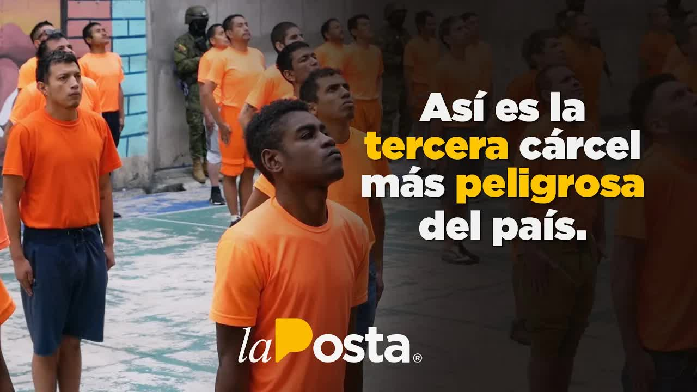
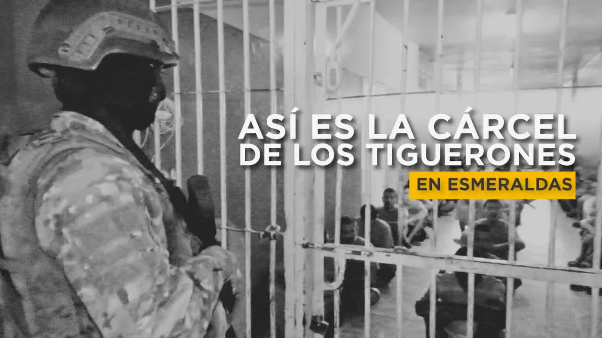
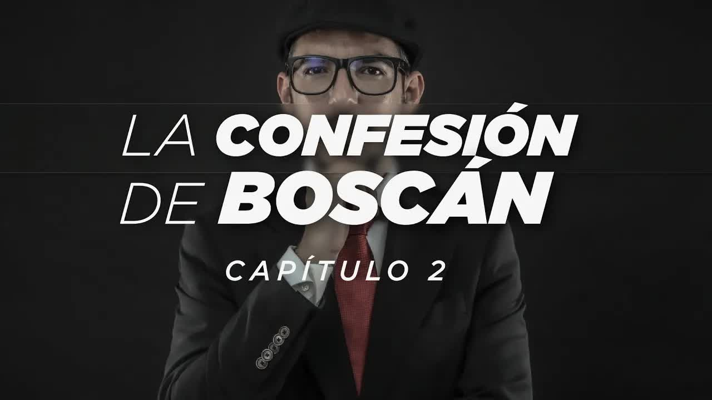
vamos a hablar de las cárceles como como nadie les habla vamos a contarles un poco la historia les contaba muchas veces cómo empezó la verdad este es el mapa esto es lo que tienen que entender esto es lo que está pasando en este momento en las cárceles del ecuador aquí había un señor además jorge luís zambrano era el líder de los choneros rasquiña llevaba era la cabeza de una estructura que dominó durante más de una …
Leer la transcripción completaestas son las bandas armadas de guayaquil y la costa esa es una de las grandes caletas del microtráfico en ecuador ese soy yo anderson boscán estoy sintonizando la posta desde la cárcel si justo al lado los inhibidores y esa soy yo mónica velásquez con los escuadrones de élite de las bandas organizadas donde nunca antes ha estado un equipo de periodistas pero antes de llegar hasta aquí hay muchas cosas que tenemos qu…
Leer la transcripción completaalor y hay que estar alerta de sus semanas si no estás en la vida imposible diario de 80 dólares diarios para nadie es un secreto que el sistema carcelario está desbaratado pero una cosa es saberlo y otra verlo por eso un equipo de la posta ingresó con autorización de los reclusos que son quienes en realidad controlan las cárceles en la segunda entrega de esta serie exclusiva de la posta verán el sistema penitenciari…
Leer la transcripción completadécada en la tercera entrega de esta serie explosiva de la posta nuestro equipo periodístico sale a las calles con las mandas feliz y das del país yo soy en versión buscan yo soy mónica de las tic's es un viernes cualquiera y nos han convocado un sector popular de guayaquil hay varias condiciones no hay nombres ni direcciones ni oportunidad de mostrar lo que se nos ha pedido dejar en reserva caminamos con el equipo h…
Leer la transcripción completaellos mandaron a matar a nuestro mayor comandante que es el capitán jl se reportó conmigo hemos visto el abandono del estado del dominio de las bandas en las cárceles hemos documentado el crimen en las calles en las grandes preguntas consiguen por responder sé cómo fue que llegamos hasta aquí y cómo arreglamos el teléfono en la cuarta entrega de esta serie exclusiva de la posta conversamos con los principales líderes…
Leer la transcripción completacontrolar hay serios reparos sobre la inteligencia policial y su capacidad para detectar algo que a todas luces tenían que detectar que este iba a matar 80 personas en los días y no santero la inteligencia policial con te dice que sí esto es lo que quiero revisar esta mañana con ustedes tengo un programa interesante el día de hoy me acompañará el ex ministro del interior de stanley está por el día de su país ex presi…
Leer la transcripción completaes un gusto y un placer poderles acompañar cada mañana yo soy jefferson sanguña en minutos ya se estará sumando también el hambre son buscan y la money velásquez al programa del día de hoy bastantes hechos que analizar el fin de semana estuvo bastante movido gracias a marcio palacio saludos desde salinas muchísimas gracias a las personas que ya se van conectando como les venía comentando un fin de semana bastante bas…
Leer la transcripción completaque bueno a ver a lo que vamos ha sido un periodo largo energía recargada semana corta trabajaremos hoy y mañana esto es el sueño freddy él es vuelta en realidad dos días de trabajo cinco días de descanso en la semana de freddy ehlers vamos a arrancar el 4 de noviembre el año del señor 2021 cafecito recién preparados los dinero que servicio ha sido malo de hernández dando paquetes en la conciencia me acompaña por sup…
Leer la transcripción completavamos a recoger los hechos que sucedieron la noche del 12 de noviembre amanecer 13 de noviembre este es el recinto penitenciario de la ciudad de guayaquil aquí tienen la cárcel regional la roca porque hasta el cdp la cárcel de mujeres y está aquí ya la conocen por los reportajes de bajo plomo es la cárcel más violenta del país la penitenciaría del litoral vamos a hacer una captura ok el miércoles de la semana pasada …
Leer la transcripción completadonde tiene que perjudicado y esa es una parte de la solución concreta para poder ir progresivamente recuperando como tú dices la soberanía ahí donde la tenemos que tener ok gobernador le voy a dar paso allí personas alguna y mónica belhaj es que tengo una pregunta para usted gobernador cómo está muy buenos días jefferson sanguña de salud en esta ocasión en una de las muy bien muchas gracias en las últimas declaracio…
Leer la transcripción completaestamos a punto de entrar a la tercera cárcel más violenta del país está en Azuay a 15 minutos del centro de Cuenca en turi y ha sido el escenario de los eventos más inarios de las cárceles que algunos hasta la describen como el mismo infierno d se quejaba uno podía perder la vida realmente así era así se vivía hace 3 años 36 presos fueron asesinados aquí y según la inteligencia policial ecuatoriana este centro funci…
Leer la transcripción completano matar no robar no engañar para que le faor en paz Esta es la cárcel de esmeraldas forma parte de las 35 prisiones del Ecuador pero sobre todo la cuarta más peligrosa de este país aquí operaba el grupo terrorista los tiguerones y hoy nosotros ingresamos para conocer cómo funciona actualmente aquí no solo nos recibe el misterio de lo que era una ciudad sumida en la delincuencia sino también las ganas de investigar c…
Leer la transcripción completaKillers Los Lobos los Latin Kings y los tiguerones me dijo que no hacía falta que él ya tenía autorización de todos que nuestra vida estaba garantizada garantizada qué garantía tengo le pregunté mi palabra su palabra lo harías tú lo harías le confiarías tu vida le confiarías la vida de tu esposa qué tal la vida de tu equipo dos productores con muchísimas ganas de volver a casa a ver a su familia por qué lo harías Par…
Leer la transcripción completaTranscripciones de los subtítulos automáticos de cada programa. No están corregidas a mano: sirven para buscar una frase y llegar al minuto exacto del video, no como cita textual literal.
Dos semanas después de la serie, otra masacre en el mismo penal: 68 muertos según la Fiscalía.
Se fugó, desató la crisis, cayó y fue extraditado.
Boscán salió en 2023; en septiembre de 2024 él y Velásquez dejaron el Ecuador de nuevo.
Las cifras de audiencia corresponden a YouTube a septiembre de 2026; la serie se estrenó los lunes de octubre de 2021. Los videos se alojan en este sitio. Las piezas de Turi y Esmeraldas de 2024 son de periodistas de La Posta en Cuenca y Esmeraldas.